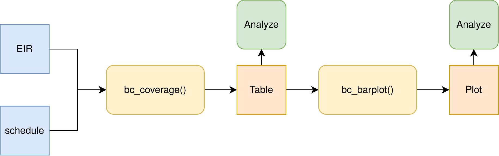

Birth Cohort Coverage
PAHO/CIM
February 12, 2026
Source:vignettes/birth_cohort_coverage_en.Rmd
birth_cohort_coverage_en.RmdRationale
The objective of this indicator is to monitor a specific birth cohort of newborns to determine their vaccination status and estimate the level of population protection against vaccine-preventable diseases. This analysis is essential for preventing the accumulation of susceptible individuals, maximizing herd immunity, and developing targeted vaccination strategies for those who have not received the necessary doses.
Vaccination coverage by birth cohort is calculates using the following formula:
Note
All functions used for complete schedule coverage analyses within PAHOabc begin with the
bc_prefix.
Usage
Install Package
The first step to run the birth cohort coverage analyses is to install the PAHOabc package available on GitHub.
devtools::install_github("IM-Data-PAHO/pahoabc")Load Data
The functions in this module require you to provide three datasets in a specific format.
- Your EIR.
- The vaccination schedule related to this EIR.
- Optionally, a table with population denominators at the same geographic level of disaggregation as your analysis.
To make it easy for you to test out PAHOabc’s functionality and understand the structure we require for your datasets, we will now explore the example datasets provided by PAHOabc that are required by this module.
EIR
The pahoabc::pahoabc.EIR data frame provides a
simulated, nominal-level table representing individual vaccination
events from an Electronic Immunization Registry (EIR). Each row
corresponds to a single vaccination act for a person, including
information on their residence, where they were vaccinated (occurrence),
their date of birth, and the vaccine dose received.
pahoabc.EIR %>% head() %>% kable(caption = "Example Electronic Immunization Registry")| ID | date_birth | date_vax | ADM1_residence | ADM2_residence | ADM1_occurrence | ADM2_occurrence | dose |
|---|---|---|---|---|---|---|---|
| 191997 | 2023-08-08 | 2023-12-26 | ADM1_4 | ADM2_4_35 | ADM1_4 | ADM2_4_35 | DTP2 |
| 212189 | 2023-12-20 | 2023-12-26 | ADM1_5 | ADM2_5_61 | ADM1_5 | ADM2_5_61 | BCG RN |
| 118063 | 2022-09-15 | 2023-12-26 | ADM1_2 | ADM2_2_5 | ADM1_2 | ADM2_2_5 | DTP1 |
| 118063 | 2022-09-15 | 2023-12-26 | ADM1_2 | ADM2_2_5 | ADM1_2 | ADM2_2_5 | YFV1 |
| 130751 | 2022-10-27 | 2023-12-12 | ADM1_5 | ADM2_5_55 | ADM1_5 | ADM2_5_55 | YFV1 |
| 136532 | 2021-09-21 | 2023-12-26 | ADM1_3 | ADM2_3_12 | ADM1_3 | ADM2_3_12 | SRP1 |
-
ID: Unique person identification number. -
date_birth: Date of birth of person. -
date_vax: Date of vaccination event. - ADM1: Refers to the first geographic administrative level of the country.
- ADM2: Refers to the second geographic administrative level of the country.
- Residence: Refers to the place where the person lives.
- Occurrence: Refers to the place where the vaccination event
occurred.
-
dose: A combined variable representing the vaccine type and its corresponding dose number. For example, DTP1 refers to the first dose of a vaccine containing diphtheria, tetanus, and pertussis components.
Vaccination Schedule
The pahoabc::pahoabc.schedule dataset defines the
national immunization schedule, listing each vaccine dose and its
recommended age of administration (in days). It helps the package
determine whether an individual is up to date with their
vaccinations.
pahoabc.schedule %>% kable(caption = "Example Immunization Schedule")| dose | age_schedule | age_schedule_low | age_schedule_high |
|---|---|---|---|
| SRP1 | 365 | 360 | 420 |
| DTP1 | 60 | 54 | 90 |
| DTP2 | 120 | 116 | 150 |
| DTP3 | 180 | 176 | 210 |
| BCG RN | 0 | 0 | 28 |
| YFV1 | 365 | 360 | 420 |
-
dose: A combined variable representing the vaccine type and its corresponding dose number. For example, DTP1 refers to the first dose of a vaccine containing diphtheria, tetanus, and pertussis components. -
age_schedule: The recommended age of administration of the correspondingdosein days. -
age_schedule_low: The lower limit for the target age in days. -
age_schedule_high: The upper limit for the target age in days.
Note
The
dosenames must match exactly those in thedosecolumn of thepahoabc.EIRdataset.
Population Denominators
While not mandatory, this module will lets you provide a population table to use as denominator for the coverage calculation. The geographic level of this table will be directly dependent on the geographic level of your analysis. For example, if you were to perform an analysis at ADM1 level, the required population denominator table must contain the following.
pahoabc.pop.ADM1 %>% head() %>% kable(caption = "Example Population at ADM1")| ADM1 | year | age | population |
|---|---|---|---|
| ADM1_1 | 2022 | 0 | 1718.189 |
| ADM1_1 | 2022 | 1 | 1808.964 |
| ADM1_1 | 2023 | 0 | 1703.145 |
| ADM1_1 | 2023 | 1 | 1792.443 |
| ADM1_2 | 2022 | 0 | 6575.261 |
| ADM1_2 | 2022 | 1 | 6922.644 |
Note that this table is in long format and contains the
population of children of a specific age
during a given year for a certain ADM1
level.
Note
Please take into account that since this analysis is performed with birth cohorts, only the rows with
age=0 are of interest in the population table, since these represent the number of children that belong to that specific birth cohort (year).
Birth cohort coverage analysis
This module lets users estimate the vaccination coverage by birth
cohort. This allows for the analysis of any vaccine among a specific
birth cohort. For correct interpretation, you must take into account
that it represents the percentage of people vaccinated among a specific
year of birth, regardless of the year in which they were vaccinated, so
it could be different from the administrative coverage of a particular
year. Additionally, it allows users to select the level of aggregation
for the results, which can be at the national level or subnational
levels (ADM1 or ADM2).
Expected Workflow
The bc_coverage() and bc_barplot()
functions provide a way of analyzing and visualizing coverage by birth
cohort. Their relationships are shown in Figure 1.

Example
Here is a simple use case of the bc_coverage() function,
where we use our example dataset to compute vaccination coverage for the
first dose of the measles-containing vaccine, for the 2022 birth year
cohort.
# compute coverage
coverage_df <- bc_coverage(
data.EIR = pahoabc.EIR,
data.schedule = pahoabc.schedule,
geo_level = "ADM1",
vaccines = "SRP1", # this can be a vector of vaccines
birth_cohorts = 2022 # this can be a vector of years
)
# show results in table
coverage_df %>%
kable(digits = 2, caption = "Coverage by birth cohort by ADM1 level")| dose | year_cohort | ADM1 | numerator | population | coverage |
|---|---|---|---|---|---|
| SRP1 | 2022 | ADM1_1 | 558 | 1733 | 32.20 |
| SRP1 | 2022 | ADM1_2 | 3138 | 12428 | 25.25 |
| SRP1 | 2022 | ADM1_3 | 13967 | 50238 | 27.80 |
| SRP1 | 2022 | ADM1_4 | 2977 | 6382 | 46.65 |
| SRP1 | 2022 | ADM1_5 | 1362 | 3488 | 39.05 |
We can visually observe these results by calling the
bc_barplot() function as shown below.
# visualize output from cs_coverage()
coverage_plot <- bc_barplot(data = coverage_df, vaccine = "SRP1")
# show
coverage_plot
A review of the different subnational levels reveals a significant
disparity: the ADM1_4 region records the best performance
in vaccination (~47%), while the ADM1_2 area exhibits the
poorest result (~25%).
Summary
By incorporating vaccination coverage based on birth cohort, PAHOabc enables public health officials to accurately assess the immunity level of specific population groups within a given territory. This deep, cohort-specific insight is essential for effective strategic planning, including the execution of measles and rubella follow-up campaigns and the development of targeted HPV vaccine catch-up strategies.